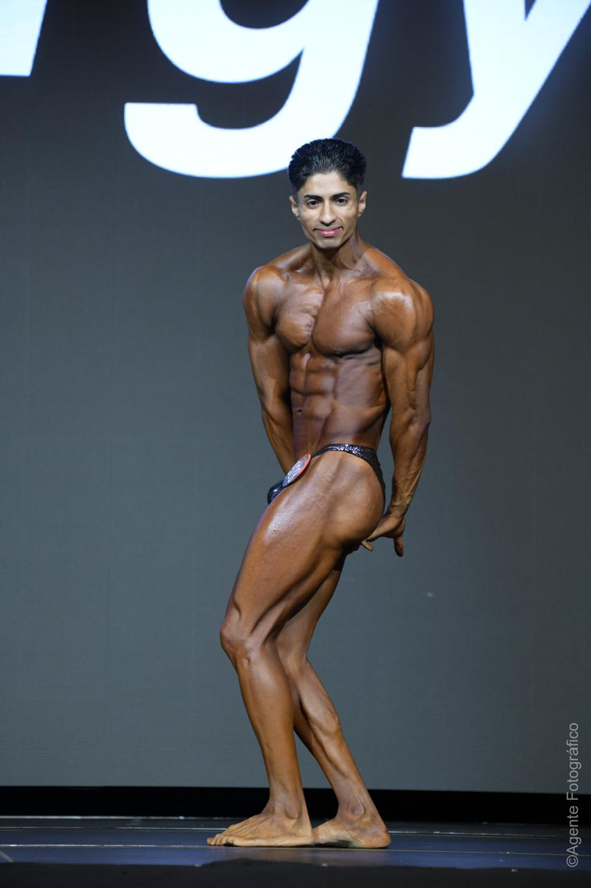

ENTRENA CON CIENCIA Y RESULTADOS.
SOLICITAR ASESORÍANivel Nacional
Regional
Chihuahua
Estatal
Una metodología que utiliza pesas libres para trabajar movimientos naturales del cuerpo, mejorando la fuerza aplicada a la vida diaria y el deporte.
No nos enfocamos solo en un músculo, sino en patrones esenciales:
Herramientas: Mancuernas, barras y kettlebells.
Estudio del sistema óseo, fisiología muscular, sistemas energéticos y mecanismos de hipertrofia.
Prevención de lesiones, técnicas de rehabilitación, fatiga y estrategias de recuperación post-entrenamiento.
Pautas nutricionales, hidratación, ayudas ergogénicas, farmacología y el sistema RTS10.
Puesta a punto en fisicoculturismo, TRT, psicología del fitness y entrenamiento especializado para la mujer.

Asesoría personalizada sin importar donde estés. Rutinas adaptadas a tu equipo y objetivos con seguimiento digital.
INFO ONLINEEntrenamiento 1 a 1 en Cd. Juárez. Corrección de técnica en tiempo real y máxima intensidad presencial.
INFO PRESENCIALPlan alimenticio perzonalizado y optimización de suplementos para salud y rendimiento.
INFO NUTRICIÓNOptimizamos el entrenamiento mediante la tensión mecánica, el estrés metabólico y mediciones precisas de plicometría y antropometría. No dejamos nada al azar.
Camargo 6412, Nuevo Hipódromo, 32685 Juárez, Chih. / Online
Horario
5AM - 10AM
4PM - 8PM